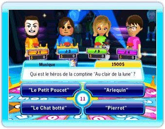
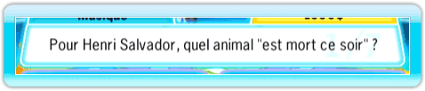
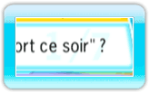
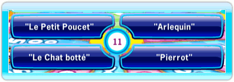

14 |
Interface de jeu |
 |

La main est votre curseur. Le chiffre affiché dessus indique le numéro du joueur (de Joueur 1 à Joueur 4). La main indique ce que la télécommande Wii pointe.
Dans le mini-jeu Lampe de poche, la télécommande Wii agit comme une lampe torche et le curseur se transforme en cercle qui vous permet de voir ce qui se cache derrière l'écran noir. La couleur du cercle varie d'un joueur à l'autre :
Le chronomètre, situé au milieu de la section des réponses, vous indique le temps qu'il reste pour répondre à la question.
En haut à gauche de la boîte contenant la question se trouve la catégorie de la question posée.
En haut à droite de la boîte contenant la question se trouve le montant d'argent que vous remporterez si vous êtes le premier à répondre correctement à la question.
 Au centre de la boîte se trouve la question.
 Les chiffres en arrière-plan vous indiquent le nombre de questions auxquelles vous avez déjà répondu sur le nombre total de questions dans cette manche.
 Pour la plupart des questions, vous aurez le choix entre 4 réponses. Choisissez celle que vous pensez être la bonne.
Pour les questions Vrai ou Faux, vous devrez faire un choix entre deux réponses (l'icône verte de validation pour Vrai et la croix rouge pour Faux). Choisissez celle que vous pensez être la bonne. |


 |
 |
 |